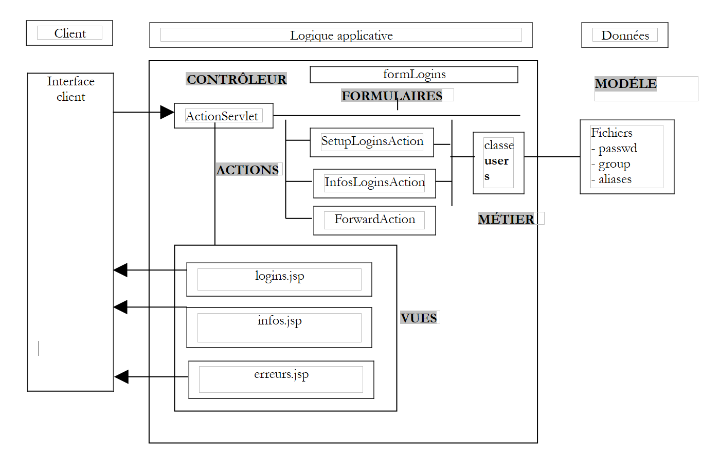

7. Application QuiEst
Nous décrivons ici une application Struts un peu plus sophistiquée que celles qui ont précédé et qui se devaient d'être simples pour être pédagogiques.
7.1. La classe users
On dispose d'une classe Java mémorisant les informations sur les utilisateurs d'une machine Unix. Celles-ci sont enregistrées dans trois fichiers particuliers :
- /etc/passwd : liste des utilisateurs
- /etc/group : liste des groupes
- /etc/aliases : liste des alias pour le courrier
Le contenu de ces trois fichiers est le suivant :
- /etc/passwd
Les lignes de ce fichier ont la forme suivante :
login:pwd:uid:gid:id:dir:shell
avec
login de l'utilisateur | |
son mot de passe crypté | |
son n° d'utilisateur | |
son n° de groupe | |
son identité | |
son répertoire de connexion | |
son interpréteur de commandes |
Ainsi la ligne d'un utilisateur pourrait être la suivante :
L'utilisateur précédent porte le n° 110 et appartient au groupe 57. C'est dans le fichier /etc/group qu'on trouvera la définition du groupe 57.
- /etc/group
Les lignes de ce fichier ont la forme suivante :
nomGroupe:pwd:gid:membre1,membre2,....
avec
nom du groupe | |
son mot de passe crypté - le plus souvent ce champ est vide | |
le n° du groupe | |
logins d'utilisateurs - ce champ peut être vide |
Ainsi la ligne du groupe 57 précédent pourrait être la suivante :
qui indique que le groupe 57 porte le nom iup2-auto.
- /etc/aliases
Les lignes de ce fichier ont la forme suivante :
avec
alias | |
une ou plusieurs tabulations | |
login de l'utilisateur auquel appartient l'alias |
Ainsi la ligne
guillaume.dupond: dupond
signifie que l'alias guillaume.dupond appartient à l'utilisateur de login dupond. Rappelons que les alias sont utilisés dans les adresses électroniques. Ainsi si dans l'exemple précédent, la machine Unix s'appelle shiva.istia.univ-angers.fr, un courrier adressé à guillaume.dupond@shiva.istia.univ-angers.fr sera délivré dans la boîte à lettres de l'utilisateur de login dupond de cette machine.
Nous ne nous intéresserons pas ici à la totalité de l'interface de la classe users mais simplement à son constructeur et quelques méthodes :
import java.io.*;
import java.util.*;
public class users{
// attributs
private Hashtable usersByLogin=new Hashtable(); // login --> login, pwd, ..., dir
private ArrayList erreurs=new ArrayList(); // liste de messages d'erreur
....
// constructeur
public users(String usersFileName, String groupsFileName, String aliasesFileName) throws Exception {
// usersFileName : nom du fichier des utilisateurs avec des lignes de la forme
// login:pwd:uid:gid:id:dir:shell
// groupsFileName : nom du fichier des groupes avec des lignes de la forme
// nom:pwd:numéro:membre1,membre2,..
// aliasesFileName : nom du fichier des alias avec des lignes de la forme
// alias:[tab]login
// construit le dictionnaire usersByLogin
....
}// constructeur
// liste des utilisateurs
public Hashtable getUsersByLogin(){
return usersByLogin;
}
// erreurs
public ArrayList getErreurs(){
return erreurs;
}
dictionnaire (Hashtable) dont les clés sont les logins du fichier passwd. La valeur associée à la clé est un tableau de chaînes (String [7]) dont les éléments sont les 7 champs de la ligne du fichier passwd associée au login. Certains champs peuvent être vides si la ligne a moins de 7 champs. | |
liste de messages d'erreurs - vide si pas d'erreurs |
7.2. L'application web quiest
On se propose de construire l'application web suivante (page formulaire) :
 |
n° | nom | type HTML | rôle |
1 | cmbLogins | <select ...>...</select> | présente la liste de tous les logins à propos desquels on peut demander de l'information |
2 | btnChercher | <input type="submit" ...> | pour lancer la recherche |
Lorsque l'utilisateur appuie sur le bouton [Chercher] (2), le login de (1) est demandé à un objet U de type users. Si le login existe, on a la réponse suivante (page infos) :
 |
Comme l'URL du navigateur le montre ci-dessus, les paramètres du formulaire sont envoyés au serveur par un GET. On peut donc donner directement au navigateur cette URL paramétrée. C'est ce que nous faisons ici, pour introduire un login qui n'existe pas. On a la réponse suivante (page erreurs) :
 |
7.3. L'architecture de l'application
 |
Nous trouvons dans cette architecture les composants suivants :
- les vues :
- logins.jsp, utilisée pour afficher la liste des logins (vue 1)
- infos.jsp utilisée pour afficher les informations liées à un login (vue 2)
- erreurs.jsp utilisée pour afficher une liste d'erreurs (vue 3)
- les formulaires de type ActionForm utilisés par les actions :
- formLogins utilisé pour collecter les données du formulaire logins.jsp
- les actions :
- SetupLoginAction qui prépare le contenu de formulaire.jsp puis affiche cette vue
- InfosLoginAction qui traite le contenu de logins.jsp une fois celui-ci envoyé au serveur
- ForwardAction qui traite le lien [Retour vers le formulaire] des vues infos.jsp et erreurs.jsp
- la classe métier users utilisée par les actions pour obtenir leurs données
- le modèle assuré par les trois fichiers plats passwd, group et aliases
7.4. Les fichiers de configuration de l'application web
7.4.1. Le fichier server.xml
Le contexte de l'application s'appellera / strutsquiest2. On ajoutera donc la ligne suivante dans le fichier server.xml de Tomcat :
Ceci fait, nous relançons éventuellement Tomcat afin qu'il prenne en compte le nouveau contexte. Nous pouvons vérifier la validité de celui-ci en demandant l'URL http://localhost:8080/strutsquiest2.
7.4.2. Le fichier web.xml
Le fichier de configuration web.xml de l'application sera le suivant :
<?xml version="1.0" encoding="UTF-8"?>
<!DOCTYPE web-app PUBLIC "-//Sun Microsystems, Inc.//DTD Web Application 2.2//EN" "http://java.sun.com/j2ee/dtds/web-app_2_2.dtd">
<web-app>
<servlet>
<servlet-name>strutsquiest2</servlet-name>
<servlet-class>istia.st.struts.quiest.Quiest2ActionServlet</servlet-class>
<init-param>
<param-name>config</param-name>
<param-value>/WEB-INF/struts-config.xml</param-value>
</init-param>
<init-param>
<param-name>passwdFileName</param-name>
<param-value>data/passwd</param-value>
</init-param>
<init-param>
<param-name>groupFileName</param-name>
<param-value>data/group</param-value>
</init-param>
</servlet>
<servlet-mapping>
<servlet-name>strutsquiest2</servlet-name>
<url-pattern>*.do</url-pattern>
</servlet-mapping>
</web-app>
Ce fichier web.xml apporte une nouveauté. Le contrôleur Struts n'est plus org.apache.struts.action.ActionServlet mais une classe dérivée qu'on a appelée ici istia.st.struts.quiest.Quiest2ActionServlet. Cela va nous permettre de récupérer les deux paramètres d'initialisation que sont passwdFileName (localisation du fichier passwd) et groupFileName (localisation du fichier group). Le fichier aliases est inutile dans cette application.
7.4.3. Le fichier struts-config.xml
Le fichier struts-config.xml sera le suivant :
<?xml version="1.0" encoding="ISO-8859-1" ?>
<!DOCTYPE struts-config PUBLIC
"-//Apache Software Foundation//DTD Struts Configuration 1.1//EN"
"http://jakarta.apache.org/struts/dtds/struts-config_1_1.dtd">
<struts-config>
<form-beans>
<form-bean name="formLogins" type="org.apache.struts.action.DynaActionForm">
<form-property name="cmbLogins" type="java.lang.String" initial=""/>
<form-property name="tLogins" type="java.lang.String[]"/>
</form-bean>
</form-beans>
<action-mappings>
<action
path="/init"
name="formLogins"
validate="false"
scope="session"
type="istia.st.struts.quiest.SetupLoginsAction"
>
<forward name="afficherLogins" path="/vues/logins.jsp"/>
<forward name="afficherErreurs" path="/vues/erreurs.jsp"/>
</action>
<action
path="/infosLogin"
name="formLogins"
validate="false"
scope="session"
type="istia.st.struts.quiest.InfosLoginAction"
>
<forward name="afficherErreurs" path="/vues/erreurs.jsp"/>
<forward name="afficherInfos" path="/vues/infos.jsp"/>
</action>
<action
path="/retourLogins"
parameter="/vues/logins.jsp"
type="org.apache.struts.actions.ForwardAction"
/>
</action-mappings>
<message-resources
parameter="istia.st.struts.quiest.ApplicationResources"
null="false"
/>
</struts-config>
On y retrouve les trois grandes sections :
- la déclaration des formulaires dans la section <form-beans>
- la déclaration des actions dans la section <action-mappings>
- la déclaration du fichier de ressources dans <message-ressources>
7.4.4. Les objets (beans) formulaires de l'application
<form-beans>
<form-bean name="formLogins" type="org.apache.struts.action.DynaActionForm">
<form-property name="cmbLogins" type="java.lang.String" initial=""/>
<form-property name="tLogins" type="java.lang.String[]"/>
</form-bean>
</form-beans>
Il n'y a qu'un bean formulaire dans notre application., appelé formLogins et de type dérivé de DynaActionForm. Il sera utilisé dans les situations suivantes :
- contenir les données nécessaires à l'affichage de la vue n° 1
- récupérer les valeurs du formulaire de la vue n°1 lorsque l'utilisateur va le valider (submit)
La structure du bean formLogins est liée au formulaire de la vue n° 1. Etudions celui-ci :
 |
n° | nom | type HTML | rôle |
1 | cmbLogins | <select ...>...</select> | présente la liste de tous les logins à propos desquels on peut demander de l'information |
2 | btnChercher | <input type="submit" ...> | pour lancer la recherche |
Distinguons plusieurs cas :
- du client vers le serveur, l'objet formLogins est utilisé pour contenir les valeurs du formulaire HTML ci-dessus qui sera posté par le bouton [Envoyer]. Il lui faut donc un champ cmbLogins qui recevra la valeur du champ HTML cmbLogins, c.a.d le login choisi par l'utilisateur.
- du serveur vers le client, l'objet formLogins est utilisé pour donner le contenu initial de la vue n° 1. Son champ tLogins servira de contenu à la liste 1. Son champ cmbLogins permettra de fixer l'élément de la liste 1 à sélectionner.
7.4.5. Les actions de l'application
Les actions sont assurées par des objets de type Action ou dérivés. La configuration des actions est faite à l'intérieur des balises <action-mappings> :
<action-mappings>
<action
path="/init"
name="formLogins"
validate="false"
scope="session"
type="istia.st.struts.quiest.SetupLoginsAction"
>
<forward name="afficherLogins" path="/vues/logins.jsp"/>
<forward name="afficherErreurs" path="/vues/erreurs.jsp"/>
</action>
<action
path="/infosLogin"
name="formLogins"
validate="false"
scope="session"
type="istia.st.struts.quiest.InfosLoginAction"
>
<forward name="afficherErreurs" path="/vues/erreurs.jsp"/>
<forward name="afficherInfos" path="/vues/infos.jsp"/>
</action>
<action
path="/retourLogins"
parameter="/vues/logins.jsp"
type="org.apache.struts.actions.ForwardAction"
/>
</action-mappings>
L'action /init
<action
path="/init"
name="formLogins"
validate="false"
scope="session"
type="istia.st.struts.quiest.SetupLoginsAction"
>
<forward name="afficherLogins" path="/vues/logins.jsp"/>
<forward name="afficherErreurs" path="/vues/erreurs.jsp"/>
</action>
Décrivons le fonctionnement de l'action /init :
- l'action /init a lieu normalement une unique fois lors du 1er cycle demande-réponse où l'utilisateur demande l'URL http://localhost:8080/strutsquiest2/init.do
- l'objet formsLogins est créé ou recyclé. Il est récupéré (recyclage) ou placé (création) dans la session comme le demande l'attribut scope.
- sa méthode reset est appelée. Rappelons que cette méthode ne fait rien par défaut dans les classes ActionForm et dérivées. Elle est appelée juste avant la recopie des données de la requête du client dans l'objet ActionForm et sert à nettoyer l'objet avant cette recopie. Quelle est ici, la requête du client ? L'action /init est déclenchée lorsque l'url demandée est http://localhost:8080/strutsquiest2/init.do. Cette URL peut être demandée par un GET ou un POST. Il suffit que l'on mette dans cette requête des paramètres portant le nom de champs de formLogins pour que ceux-ci soient initialisés comme le montre l'exemple suivant :

- la requête contient le paramètre cmbLogins (afterpak). Le contrôleur Struts a donc recopié la valeur de ce paramètre dans le champ cmbLogins de formLogins. L'action SetupLoginsAction s'est ensuite déroulée et s'est achevée par l'affichage de la vue logins.jsp. Cette vue a un formulaire dont certains champs reçoivent leur valeur de formLogins. Ainsi le champ HTML select appelé cmbLogins a reçu sa valeur du champ cmbLogins (=afterpak) de formLogins. C'est pourquoi, la liste de logins apparaît positionnée sur le login afterpak.
- on pourrait s'amuser à passer également un paramètre tLogins de la façon suivante :
Cela aurait pour effet d'initialiser le champ tLogins de formLogins avec un tableau {"login1","login2"}. Seulement, nous allons voir plus loin, que l'action SetupLoginsAction affecte une valeur au champ tLogins et remplace le tableau ainsi créé par un nouveau tableau. C'est ce dernier qui apparaît donc dans la vue logins.jsp.
- la discussion précédente, bien qu'un peu complexe, a le mérite de montrer qu'on ne peut pas faire l'hypothèse que l'action /init sera déclenchée sans paramètres provenant du client. Il peut donc être utile d'utiliser la méthode reset pour nettoyer formLogins. Dans ce cas, il nous faudrait dériver la classe DynaActionForm. Nous ne l'avons pas fait ici.
- une fois la méthode reset de formLogins appelée, le contrôleur recopie les données de la requête du client dans les champs de même nom de formLogins. Normalement, l'action /init est appelée sans paramètres du client mais nous avons montré précédemment que rien n'empêchait le client d'invoquer l'action /init avec des paramètres arbitraires. A l'issue de cette phase, les champs cmbLogins et tLogins peuvent donc très bien avoir une valeur. Nous avons vu que le champ cmbLogins conserverait cette valeur mais pas le champ tLogins.
- le contrôleur regarde ensuite l'attribut validate de l'action. Ici, il a la valeur "false". La méthode validate de formLogins ne sera pas appelée. Nous ne l'écrirons donc pas.
- l'objet SetupLoginsAction est créé ou recyclé s'il existait déjà et sa méthode execute lancée. Son seul rôle est d'affecter une valeur au champ tLogins de formLogins. Cette valeur est le tableau des logins, tableau qui sera demandé à la classe métier users. Cette opération peut échouer. C'est pourquoi l'action /init peut être suivie de deux vues :
- la vue erreurs.jsp si la classe users n'a pu fournir le tableau des logins
- la vue logins.jsp sinon
- le contrôleur fera afficher l'une de ces deux vues
- le cycle demande-réponse de l'action /init est terminé.
L'action /infosLogin
<action
path="/infosLogin"
name="formLogins"
validate="false"
scope="session"
type="istia.st.struts.quiest.InfosLoginAction"
>
<forward name="afficherErreurs" path="/vues/erreurs.jsp"/>
<forward name="afficherInfos" path="/vues/infos.jsp"/>
</action>
Décrivons le fonctionnement de l'action / infosLogin :
- l'action /infosLogin a lieu normalement lorsque l'utilisateur clique sur le bouton [Chercher] de la vue logins.jsp. Une requête est alors faite au serveur, fixée par la balise HTML <form> de la vue :
<html:form name="formLogins" method="get" action="/infosLogin" type="org.apache.struts.action.DynaActionForm">
- on voit que la requête est envoyée au serveur par la méthode get. L'utilisateur peut donc la taper à la main :

- l'objet formsLogins est créé ou recyclé. Il est récupéré (recyclage) ou placé (création) dans la session comme le demande l'attribut scope.
- sa méthode reset est appelée juste avant la recopie des données de la requête du client dans l'objet ActionForm. Elle est normalement de la forme http://localhost:8080/strutsquiest2/infosLogin.do?cmbLogins=xx où xx est un login choisi dans la liste des logins. Mais ce peut être aussi n'importe quoi si l'utilisateur a utilisé l'URL précédente en passant des paramètres arbitraires. Considérons la séquence de pages suivantes :

- l'action /infosLogin a été appelée avec la chaîne de paramètres cmbLogins=xx&tLogins=login1&tLogins=login2. Les champs cmbLogins et tLogins de formLogins vont donc recevoir respectivement les valeurs "xx" et {"login1","login2"}. L'action /infosLogin va demander à la classe métier users, les informations associées au login "xx". La classe users va lui répondre que ce login n'existe pas. D'où la vue envoyée ci-dessus. Maintenant, utilisons le lien [Retour au formulaire] ci-dessus :

- C'est l'action /retourLogins qui est déclenchée par le lien [Retour au formulaire]. Cette action se contente d'afficher la vue logins.jsp sans action intermédiaire. On se rappelle que le champ tLogins sert à alimenter la liste des logins de la vue logins.jsp. Comme l'utilisateur a changé cette valeur en {"login1","login2"}, ce sont ces deux logins qui apparaissent maintenant dans la liste. De nouveau, on ne peut qu'insister sur la nécessité absolue de prendre en compte dans le fonctionnement d'une application le cas des paramètres arbitraires fixés par un utilisateur ou un programme. La solution au problème posé ici serait que le lien [Retour au formulaire] vise l'action /init. Ainsi on serait sûr d'obtenir la liste correcte des logins.
- Revenons à une requête normale à l'action /infosLogin du genre :
http://localhost:8080/strutsquiest2/infosLogin.do?cmbLogins=afterpak
- Le contrôleur Struts va affecter une valeur au champ cmbLogins de l'objet ActionForm. Le champ tLogins lui ne sera pas affecté (pas de champ correspondant dans la requête envoyée). Ce fonctionnement nous convient. Nous n'aurons donc pas à écrire de méthode reset personnalisée pour formLogins.
- une fois la méthode reset de formLogins appelée, le contrôleur recopie les données de la requête du client dans les champs de même nom de formLogins. Le champ cmbLogins va recevoir une valeur, le login choisi par l'utilisateur (afterpak).
- le contrôleur regarde ensuite l'attribut validate de l'action. Ici, il a la valeur "false". La méthode validate de formLogins ne sera pas appelée.
- l'objet InfosLoginAction est créé ou recyclé s'il existait déjà et sa méthode execute lancée. Son rôle est d'obtenir les informations associées au login cmbLogins. Ces informations seront demandées à la classe métier users. Cette opération peut échouer (login inexistant par exemple). C'est pourquoi l'action /infosLogin peut être suivie de deux vues :
- la vue erreurs.jsp si la classe users n'a pu fournir les renseignements demandés
- la vue infos.jsp sinon
- le contrôleur fera afficher l'une de ces deux vues
- le cycle demande-réponse de l'action /infosLogin est terminé.
L'action /retourLogins
<action
path="/retourLogins"
parameter="/vues/logins.jsp"
type="org.apache.struts.actions.ForwardAction"
/>
- l'action /retourLogins est déclenchée par activation du lien [Retour au formulaire] des vues erreurs.jsp et infos.jsp.
- ici il n'y a pas de formulaire associé à l'action. On passe donc tout de suite à l'exécution de la méthode execute d'un objet ForwardAction qui va rendre un objet ActionForward pointant sur la vue /vues/logins.jsp.
7.4.6. Le fichier de messages de l'application
La troisième section du fichier struts-config.xml est celui du fichier des messages :
Le fichier ApplicationResources.properties est placé dans WEB-INF/classes/istia/st/struts/quiest. Son contenu est le suivant :
errors.header=<ul>
errors.footer=</ul>
parametreManquant=<li>Le paramètre [{0}] n'a pas été initialisé</li>
usersException=<li>Erreur d'initialisation de l'application : {0}</li>
loginInconnu=<li>Le login [{0}] n'existe pas</li>
7.5. Le code des vues
Le lecteur est invité à relire la leçon sur la gestion des formulaires s'il ne comprend pas le code des vues présentées ci-dessous.
7.5.1. La vue logins.jsp
Rappelons que cette vue est affichée dans deux cas :
- à l'appel de l'action /init lors du 1er cycle demande-réponse
- à l'appel de l'action /retourLogins lors des cycles suivants
Le code de la vue logins.jsp est le suivant :
<%@ taglib uri="/WEB-INF/struts-html.tld" prefix="html" %>
<html>
<head>
<title>Quiest - formulaire</title>
</head>
<body background="<html:rewrite page="/images/standard.jpg"/>">
<center>
<h2>Application QuiEst</h2>
<hr>
<html:form name="formLogins" method="get" action="/infosLogin" type="org.apache.struts.action.DynaActionForm">
<table>
<tr>
<td>Login cherché</td>
<td>
<html:select name="formLogins" property="cmbLogins">
<html:options name="formLogins" property="tLogins"/>
</html:select>
</td>
<td>
<html:submit value="Chercher"/>
</td>
</tr>
</table>
</html:form>
</center>
</body>
</html>
7.5.2. La vue infos.jsp
Cette vue est affichée lors d'un appel réussi à l'action /infosLogin. Son code est le suivant :
<%@ taglib uri="/WEB-INF/struts-html.tld" prefix="html" %>
<%@ taglib uri="/WEB-INF/struts-bean.tld" prefix="bean" %>
<html>
<head>
<title><bean:write name="infosLoginBean" scope="request" property="titre"/></title>
</head>
<body background="<html:rewrite page="/images/standard.jpg"/>">
<h2><bean:write name="infosLoginBean" scope="request" property="titre"/></h2>
<hr>
<table border="1">
<tr>
<th>login</th><th>pwd</th><th>uid</th><th>gid</th><th>id</th><th>dir</th><th>shell</th>
</tr>
<tr>
<td><bean:write name="infosLoginBean" scope="request" property="infosLogin[0]"/></td>
<td><bean:write name="infosLoginBean" scope="request" property="infosLogin[1]"/></td>
<td><bean:write name="infosLoginBean" scope="request" property="infosLogin[2]"/></td>
<td><bean:write name="infosLoginBean" scope="request" property="infosLogin[3]"/></td>
<td><bean:write name="infosLoginBean" scope="request" property="infosLogin[4]"/></td>
<td><bean:write name="infosLoginBean" scope="request" property="infosLogin[5]"/></td>
<td><bean:write name="infosLoginBean" scope="request" property="infosLogin[6]"/></td>
</tr>
</table>
<br>
<html:link page="/retourLogins.do">
Retour au formulaire
</html:link>
</body>
</html>
Cette vue utilise un objet appelé infosLoginBean et placé dans la requête par l'action /infosLogin. Cet objet a deux champs :
String titre; // titre à afficher dans la vue
String[] infosLogin; // tableau des informations à afficher dans la vue
Nous détaillerons cette classe lorsque nous aborderons le code de la classe InfosLoginAction.
7.5.3. La vue erreurs.jsp
Cette vue est affichée lorsque les actions /init ou /infosLogin se terminent par une erreur. Son code est le suivant :
<%@ taglib uri="/WEB-INF/struts-html.tld" prefix="html" %>
<html>
<head>
<title>Application QuiEst - erreurs</title>
</head>
<body background="<html:rewrite page="/images/standard.jpg"/>">
<h2 align="center">Application QuiEst - Erreurs</h2>
<hr>
<h2>Les erreurs suivantes se sont produites</h2>
<html:errors/>
<html:link page="/retourLogins.do">
Retour au formulaire
</html:link>
</body>
</html>
7.6. Les classes Java
Le fichier web.xml référence une classe Java :
<web-app>
<servlet>
<servlet-name>strutsquiest2</servlet-name>
<servlet-class>istia.st.struts.quiest.Quiest2ActionServlet</servlet-class>
....
</servlet>
...
</web-app>
Le fichier de configuration struts-config.xml référence lui deux classes Java :
<action
path="/infosLogin"
name="formLogins"
validate="false"
scope="session"
type="istia.st.struts.quiest.InfosLoginAction"
>
<forward name="afficherErreurs" path="/vues/erreurs.jsp"/>
<forward name="afficherInfos" path="/vues/infos.jsp"/>
</action>
<action
path="/init"
name="formLogins"
validate="false"
scope="session"
type="istia.st.struts.quiest.SetupLoginsAction"
>
<forward name="afficherLogins" path="/vues/logins.jsp"/>
<forward name="afficherErreurs" path="/vues/erreurs.jsp"/>
</action>
7.6.1. La classe Quiest2ActionServlet
La classe Quiest2ActionServlet est dérivée de la classe ActionServlet, la classe du contrôleur Struts. Nous dérivons la classe ActionServlet pour personnaliser sa méthode init. En effet, cette méthode, exécutée une seule fois au moment du chargement initial de la servlet, va nous permettre de construire un objet métier de type users. Cet objet n'a en effet besoin d'être construit qu'une seule fois et la méthode init est un bon endroit pour faire cette construction. L'objet users a besoin de deux fichiers pour se construire, les fichiers passwd et group. La localisation de ces deux fichiers est passée en paramètres à la servlet dans le fichier web.xml de l'application :
<servlet>
<servlet-name>strutsquiest2</servlet-name>
<servlet-class>istia.st.struts.quiest.Quiest2ActionServlet</servlet-class>
<init-param>
<param-name>config</param-name>
<param-value>/WEB-INF/struts-config.xml</param-value>
</init-param>
<init-param>
<param-name>passwdFileName</param-name>
<param-value>data/passwd</param-value>
</init-param>
<init-param>
<param-name>groupFileName</param-name>
<param-value>data/group</param-value>
</init-param>
</servlet>
Le code de la servlet est le suivant :
package istia.st.struts.quiest;
import java.util.*;
import javax.servlet.*;
import org.apache.struts.action.*;
import istia.st.users.*;
public class Quiest2ActionServlet
extends ActionServlet {
// attributs de la servlet
private users u = null;
private ActionErrors erreurs = new ActionErrors();
private String[] tLogins;
//init
public void init() throws ServletException {
// ne pas oublier d'initialiser la classe parent
super.init();
// variables locales
final String[] initParams = {"passwdFileName", "groupFileName"};
Properties params = new Properties();
// on récupère les paramètres d'initialisation de la servlet
ServletConfig config = getServletConfig();
String servletPath = config.getServletContext().getRealPath("/");
for (int i = 0; i < initParams.length; i++) {
String valeur = config.getInitParameter(initParams[i]);
if (valeur == null) {
erreurs.add(ActionErrors.GLOBAL_ERROR, new ActionError("parametreManquant", initParams[i]));
valeur = "";
}
// on mémorise le paramètre
params.setProperty(initParams[i], valeur);
} //for
// retour s'il y a eu des erreurs d'initialisation
if (erreurs.size() != 0) {
return;
}
// on crée un objet users
try {
u = new users(servletPath + "/" + params.getProperty("passwdFileName"),
servletPath + "/" + params.getProperty("groupFileName"), null);
}
catch (Exception ex) {
erreurs.add(ActionErrors.GLOBAL_ERROR, new ActionError("usersException", ex.getMessage()));
return;
} //catch
// on récupère la liste des logins
tLogins = new String[u.getUsersByLogin().size()];
Enumeration eLogins = u.getUsersByLogin().keys();
for (int i = 0; i < tLogins.length; i++) {
tLogins[i] = (String) eLogins.nextElement();
}
// on trie les logins
Arrays.sort(tLogins);
} //init
// méthode d'accès aux infos privées de la servlet
public Object[] getInfos() {
return new Object[] {erreurs, u, tLogins};
}
}
Sommairement, le fonctionnement de la méthode init est le suivant :
- tout d'abord, il y a appel à la méthode init de la classe parent (ActionServlet) pour que celle-ci s'initialise correctement
- puis il y a lecture des paramètres d'initialisation. S'il en manque, l'attribut privé ActionErrors erreurs est renseigné.
- si les paramètres d'initialisation sont bien là, un objet users est construit. Cette construction peut lancer une exception. Dans ce cas, l'attribut ActionErrors erreurs est renseigné.
- si la construction s'est bien passée, on tire de l'objet créé la liste de tous les logins et on trie celle-ci dans un tableau que l'on met dans l'attribut privé String[] tLogins.
- l'objet users construit est mémorisé dans l'attribut privé users u.
- la méthode publique getInfos permet d'obtenir les trois attributs privés (u, erreurs, tLogins) dans un tableau d'objets.
7.6.2. La classe SetupLoginsAction
Cette action a pour but d'initialiser l'objet DynaActionForm formLogins. Cet objet placé dans la session n'aura plus besoin d'être réinitialisé par la suite. L'action SetupLoginsAction n'a donc lieu qu'une fois. Son code est le suivant :
package istia.st.struts.quiest;
import java.io.*;
import javax.servlet.*;
import javax.servlet.http.*;
import org.apache.struts.action.*;
public class SetupLoginsAction
extends Action {
public ActionForward execute(ActionMapping mapping, ActionForm form,
HttpServletRequest request, HttpServletResponse response) throws IOException,ServletException {
// prépare le formulaire à afficher
// on récupère les infos de la servlet contrôleur
// infos=(ActionErrors erreurs, users u, String[] tLogins)
Object[] infos = ( (Quiest2ActionServlet)this.getServlet()).getInfos();
// y-a-t-il eu des erreurs d'initialisations ?
ActionErrors erreurs = (ActionErrors) infos[0];
if (!erreurs.isEmpty()) {
this.saveErrors(request, erreurs);
return mapping.findForward("afficherErreurs");
}
// on met les logins dans le formulaire
DynaActionForm formLogins=(DynaActionForm) form;
formLogins.set("tLogins",infos[2]);
return mapping.findForward("afficherLogins");
}
}
Comme pour toutes les actions Struts, le code se trouve dans la méthode execute. Celle-ci :
- récupère auprès du contrôleur Struts les informations que celui-ci a mémorisées grâce à sa méthode init. C'est la méthode getServlet() de la classe Action qui permet cela.
- parmi celles-ci se trouve l'attribut ActionErrors erreurs du contrôleur. Si cette liste d'erreurs est non vide, elle est placée dans la requête et on demande l'affichage de la vue erreurs.jsp.
- si la liste des erreurs est vide, alors on affecte au champ tLogins du bean formLogins, la liste des logins créée initialement par le contrôleur. On demande ensuite l'affichage de la vue logins.jsp qui va afficher la liste des logins.
7.6.3. Les classes InfosLoginBean et InfosLoginAction
L'action InfosLoginAction a pour but de récupérer les informations associées au login choisi par l'utilisateur et de les présenter à celui-ci. Les informations seront rassemblées dans un objet de type InfosLoginBean :
package istia.st.struts.quiest;
public class InfosLoginBean implements java.io.Serializable{
// bean détenant l'info nécessaire à la page d'infos
private String titre;
private String[] infosLogin;
// constructeur
public InfosLoginBean(String titre, String[] infosLogin){
this.titre=titre;
this.infosLogin=infosLogin;
}
// getters
public String getTitre(){
return this.titre;
}
public String[] getInfosLogin(){
return this.infosLogin;
}
public String getInfosLogin(int i){
return this.infosLogin[i];
}
}
La classe précédente est un bean, c.a.d. une classe java où un attribut privé T unAttribut est automatiquement associé à deux méthodes privées :
- void setUnAttribut(T valeur){unAttribut=valeur;}
- T getUnAttribut(){ return unAttribut;}
On notera la syntaxe spéciale des méthodes get et set. Si l'attribut est un tableau T[] unAttribut, on peut créer des méthodes get et set pour les éléments du tableau :
- void setUnAttribut(T valeur, int i){unAttribut[i]=valeur;}
- T getUnAttribut(int i){ return unAttribut[i];}
Pour mieux comprendre, reprenons le code de la vue infos.jsp qui doit être envoyée à la suite de l'action InfosLoginAction :
<%@ taglib uri="/WEB-INF/struts-html.tld" prefix="html" %>
<%@ taglib uri="/WEB-INF/struts-bean.tld" prefix="bean" %>
<html>
<head>
<title><bean:write name="infosLoginBean" scope="request" property="titre"/></title>
</head>
<body background="<html:rewrite page="/images/standard.jpg"/>">
<h2><bean:write name="infosLoginBean" scope="request" property="titre"/></h2>
<hr>
<table border="1">
<tr>
<th>login</th><th>pwd</th><th>uid</th><th>gid</th><th>id</th><th>dir</th><th>shell</th>
</tr>
<tr>
<td><bean:write name="infosLoginBean" scope="request" property="infosLogin[0]"/></td>
<td><bean:write name="infosLoginBean" scope="request" property="infosLogin[1]"/></td>
<td><bean:write name="infosLoginBean" scope="request" property="infosLogin[2]"/></td>
<td><bean:write name="infosLoginBean" scope="request" property="infosLogin[3]"/></td>
<td><bean:write name="infosLoginBean" scope="request" property="infosLogin[4]"/></td>
<td><bean:write name="infosLoginBean" scope="request" property="infosLogin[5]"/></td>
<td><bean:write name="infosLoginBean" scope="request" property="infosLogin[6]"/></td>
</tr>
</table>
<br>
<html:link page="/retourLogins.do">
Retour au formulaire
</html:link>
</body>
</html>
Prenons la balise suivante :
Elle demande à écrire la valeur du champ titre (property) de l'objet infosLoginBean (name) mis dans la requête (scope). La valeur à écrire sera obtenue par request.getAttribute("infosLoginBean").getTitre(). Il faut donc que la méthode getTitre existe dans la classe InfosLoginBean. C'est le cas. La balise
demande à écrire la valeur de l'élément infosLogin[0] de l'objet infosLoginBean mis dans la requête. La valeur à écrire sera obtenue par request.getAttribute("infosLoginBean").getInfosLogin(0). Il faut donc que la méthode getInfosLogin(int i) existe dans la classe InfosLoginBean. C'est le cas.
La classe InfosLoginAction a pour but de construire l'objet InfosLoginBean précédent à partir d'un login choisi par l'utilisateur. Son code est le suivant :
package istia.st.struts.quiest;
import java.io.*;
import javax.servlet.*;
import javax.servlet.http.*;
import org.apache.struts.action.*;
import istia.st.users.*;
public class InfosLoginAction
extends Action {
public ActionForward execute(ActionMapping mapping, ActionForm form,
HttpServletRequest request, HttpServletResponse response) throws IOException,ServletException {
// doit afficher les infos liées à un login
// on récupère les infos de la servlet contrôleur
// infos=(ActionErrors erreurs, users u, LoginBean[] tLogins)
Object[] infos = ( (Quiest2ActionServlet)this.getServlet()).getInfos();
// y-a-t-il eu des erreurs d'initialisations ?
ActionErrors erreurs = (ActionErrors) infos[0];
if (!erreurs.isEmpty()) {
this.saveErrors(request, erreurs);
return mapping.findForward("afficherErreurs");
}
// d'abord récupérer ce login
String login = (String) ( (DynaActionForm) form).get("cmbLogins");
// a-t-on qq chose ?
if (login == null) {
// pas normal - on renvoie le formulaire des logins
DynaActionForm formLogins=(DynaActionForm) form;
formLogins.set("tLogins",infos[2]);
return mapping.findForward("afficherLogins");
}
// on a un login - on le cherche
String[] infosLogin = (String[]) ( (users) infos[1]).getUsersByLogin().get(login);
// a-t-on trouvé ?
if (infosLogin == null) {
// le login n'a pas été trouvé - on affiche la page d'erreurs
ActionErrors erreurs2=new ActionErrors();
erreurs2.add(ActionErrors.GLOBAL_ERROR, new ActionError("loginInconnu", login));
this.saveErrors(request, erreurs2);
return mapping.findForward("afficherErreurs");
}
// le login a été trouvé - on met les infos trouvées dans la requête
String titre="Application QuiEst - login["+login+"]";
InfosLoginBean infosLoginBean= new InfosLoginBean(titre,infosLogin);
request.setAttribute("infosLoginBean",infosLoginBean);
return mapping.findForward("afficherInfos");
}
}
Le fonctionnement de la méthode execute est le suivant :
- on récupère les informations collectées par le contrôleur Struts lors de son initialisation. Si celui-ci avait noté des erreurs, l'exécution s'arrête là avec demande d'affichage de ces erreurs.
- on vérifie qu'il y a bien un login. Si l'utilisateur est passé par le formulaire de choix d'un login, le login est bien présent. Mais l'utilisateur peut très bien taper l'url de l'action directement dans son navigateur sans passer de paramètres. S'il n'y a pas de login, on fait réafficher la liste des logins.
- si on un login, on demande les informations associées à la classe métier users. Si celle-ci ne trouve pas le login cherché, la page d'erreurs est affichée. Sinon, un objet InfosLoginBean est construit pour y mettre les informations dont a besoin la vue infos.jsp. Cet objet est mis dans la requête et on fait afficher la page infos.jsp.
7.7. Déploiement
L'arborescence de l'application est la suivante :
 |  |
 |  |
 |  |
 |
7.8. Conclusion
Nous avons utilisé Struts dans une application réaliste utilisant une classe métier. Nous avons par ailleurs montré qu'il fallait prêter particulièrement attention à la requête envoyée par un client et ne faire aucune hypothèse sur la nature de celle-ci. Une requête peut être quelconque et toute application doit commencer par vérifier la validité de celle-ci.